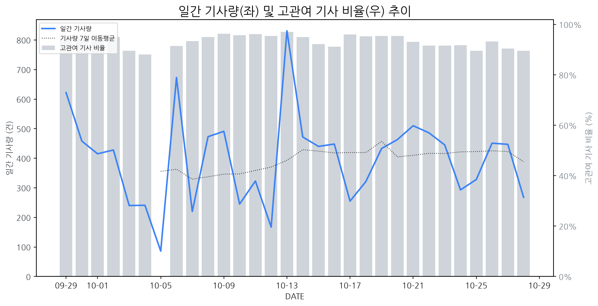

1
시장 활동 지표
기사량 추세 & 이상 징후 탐지
시장의 '전체 기사량'이 평소보다 비정상적으로 급증했는지(Spike)를 차트로 확인하고, LLM이 분석한 급등의 핵심 원인을 파악할 수 있음

고관여 기사란? 산업 연관 키워드로 수집된 기사들 중 디스플레이 키워드에 가중치를 반영하여 도출된 관련성 높은 기사
수집된 기사 수 (2026-10-28)
268
-47% WoW
기사량 변동 수준 (7일 이동평균 대비)
±6.7% 이하
2
오늘의 키워드
급격한 관심 ↑, 주목해야 할 키워드
1
lg전자
+8.8σ
LG전자가 TV 사업 흑자 전환과 전장 사업 최대 실적을 기록하며 3분기 영업이익이 크게 증가했습니다.
Related Metrics
금일 언급량: 51, 전일 대비: +43
Interpretation
TV 시장 경쟁력 강화
Next Step
'lg전자' 관련 상세 기사 및 경쟁사 반응 모니터링
2
woled
+4.2σ
LG디스플레이의 WOLED 누적 판매 5000만대 돌파 소식이 시장의 주목을 받았습니다.
Related Metrics
금일 언급량: 11, 전일 대비: +11
Interpretation
WOLED 기술력 입증
Next Step
핵심 토픽 'OLED_Topic' 관련 신호입니다. 3번 섹션(키워드 감성분석)에서 해당 토픽의 감성 변동을 교차 확인하세요.
3
양산
+2.3σ
서울바이오시스/서울반도체의 희토류 없는 백색 마이크로 LED 양산 소식이 시장 주목을 끌었습니다.
Related Metrics
금일 언급량: 9, 전일 대비: +9
Interpretation
원가 절감 기술 부각
Next Step
'양산' 관련 상세 기사 및 경쟁사 반응 모니터링
4
tv
+1.9σ
LG전자의 3분기 실적 호조, 특히 TV 사업 흑자 전환 소식이 주가에 긍정적 영향을 미쳤습니다.
Related Metrics
금일 언급량: 9, 전일 대비: +4
Interpretation
TV 시장 회복 신호
Next Step
'tv' 관련 상세 기사 및 경쟁사 반응 모니터링
3
실시간 Risk 키워드
경계해야 할 시그널 탐지
특정 토픽의 부정 감성 점수가 급등할 때 이를 즉시 탐지하고, "근거 기사" 링크를 통해 리스크의 실체를 빠르게 파악할 수 있음
키워드 분석 결과, 오늘은 걱정할 만한 하락 신호가 없습니다. (부정 언급량 변화: +1.5σ 이내)
4
주요 이벤트 모니터링
실시간 산업 동향 파악을 위한 주요 활동
최근 발생한 주요 기업들의 신제품 출시, 투자 등 주요 이벤트를 제공하여 매일 경쟁사 동향을 확인할 수 있음
애플이 2,899달러부터 시작하는 첫 터치스크린 맥북 프로를 출시했습니다. 이 신제품은 터치 기능을 '선택' 사항으로 제공합니다.
Impact
터치스크린 노트북 시장의 경쟁을 심화시키고, 디스플레이 패널 기술의 진화와 사용자 인터페이스 혁신을 촉진할 것으로 예상됩니다.
Next Step
터치스크린 디스플레이의 성능, 내구성, 비용 효율성을 강화하고, 노트북 제조사들의 다양한 요구에 부응할 수 있는 맞춤형 솔루션 개발에 집중해야 합니다.
기컴은 'IT13 맥스'라는 이름의 손바닥만 한 미니 PC를 출시했습니다. 이 제품은 작은 크기에도 불구하고 필요한 모든 기능을 담고 있으며, 이는 차세대 IT 기기의 활용성을 높일 것으로 기대됩니다.
Impact
초소형 폼팩터 PC의 확산은 고해상도 및 특수 목적 디스플레이 패널에 대한 수요를 견인할 수 있습니다.
Next Step
디스플레이 제조 기업은 초소형 폼팩터 PC에 최적화된 고해상도, 저전력, 고효율 디스플레이 패널 개발 및 공급을 고려해야 합니다.
한국 디스플레이 업계가 OLED 신기술을 통해 기존 일본의 독점을 깨뜨리고 시장 경쟁력을 확보하려 한다. 이는 일본이 장악했던 시장의 판도를 바꿀 잠재력을 지닌다.
Impact
이번 한국의 OLED 신기술 투자는 디스플레이 시장의 기술 경쟁을 심화시키고, 공급망의 다변화 및 가격 변동성을 야기할 수 있다.
Next Step
자사 OLED 기술의 차별화 및 경쟁력 강화에 집중하고, 신기술 개발 및 양산 능력 확보를 위한 투자를 적극적으로 검토해야 한다.
지스타 2026에서 '인디 쇼케이스 2.0'이 개최되며, 삼성전자의 갤럭시가 참가한다. 이는 모바일 기기를 활용한 인디 게임 개발 및 홍보 지원을 강화하는 행사이다.
Impact
갤럭시 디바이스 및 관련 기술의 게임 시장 내 영향력 확대와 더불어, 모바일 디스플레이의 게임 경험 중요성이 더욱 부각될 수 있다.
Next Step
디스플레이 제조 기업은 갤럭시 등 모바일 디바이스와의 최적화된 게임 디스플레이 기술 개발 및 홍보에 집중해야 한다.
애플의 맥북 출시 20주년을 맞아, 맥북이 제시한 디자인 및 사용자 경험 혁신이 지난 20년간 PC 업계 전반에 큰 영향을 미쳤음을 조명한다. 특히 얇고 가벼운 디자인, 고품질 디스플레이, 사용자 친화적인 인터페이스 등은 경쟁사들의 제품 개발에 지속적인 영감을 주었다.
Impact
맥북의 디자인 리더십은 향후 노트북 디스플레이 패널의 얇기, 베젤 축소, 색 재현율 및 밝기 향상 등 기술적 요구사항을 더욱 강화하여 디스플레이 시장의 혁신을 가속화할 것이다.
Next Step
얇고 고화질의 차세대 노트북용 디스플레이 솔루션 개발 및 생산 능력 강화에 집중하여 경쟁 우위를 확보해야 한다.